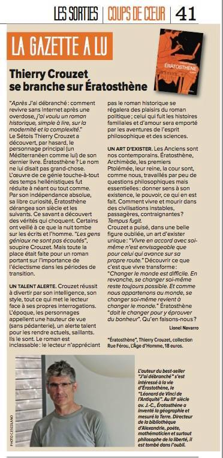

Ératosthène / Revue de presse
- 16/12/2019, blog, Un roman qui ouvre des portes
- 10/8/2015, blog, Mots et Images
- 25/1/2015, blog, Deuzeffe
- 23/1/2015, blog, Tulisquoi
- 11/12/2014, blog, Ératosthène de Thierry Crouzet
- 4/11/2014, Radio Clapas Montpellier, Du chien sans l’faire exprès.
- 30/10/2014, La Gazette de Montpellier, Thierry Crouzet se
branche sur Ératosthène, Lionel Navaro.
gazette
- 9/10/2014, lectrice, Ératosthène-Junior-Junior, Line Fromental.
- 23/9/2014, Prospective du Livre, En compagnie d'Ératosthène, Lorenzo Soccavo.
- 16/9/2014, Léa Touch Book, Lorsque nous finissons ce type de roman, nous ne sommes plus les mêmes, Grybouille.
- 8/9/2014, Page42, Ératosthène, sur la piste d'un éclaireur, Neil Jomunsi.
- 6/9/2014, SensCritique, Le livre de Crouzet dit ce que nous sommes là où le succès du livre d'une ex dame le prouve, Valery.
- 4/9/2014, Le Tiers Livre, Ératosthène, un roman du verrou mental, François Bon.
- 1/9/2014, Blog, Un Ératosthène enrichi en ebook, Aldus.
- 31/8/2014, destimed.fr, La Bibliothèque Méditerranéenne de Mireille.
- 30/8/2014, Blog, Un bel hommage à l’un des génies de l’humanité, Philippe Castelneau.
- 29/8/2014, Unwalker, Un putain de coup de boule sur nous humains, Dominique Bouchard.
- 27/8/2014, Feedbooks, Les régressions sont toujours possibles. Mon roman est une sorte de mise en garde, Bernard Strainchamps.
- 14/8/2014, AcuaLitté, Eratosthène : Du texte sur rouleau unique aux droits numériques, Nicolas Gary.
- 8/8/2014, Feedbook, Ératosthène de Thierry Crouzet, Bernard Strainchamps.
Sommaire | Texte publié vendredi 8 août 2014